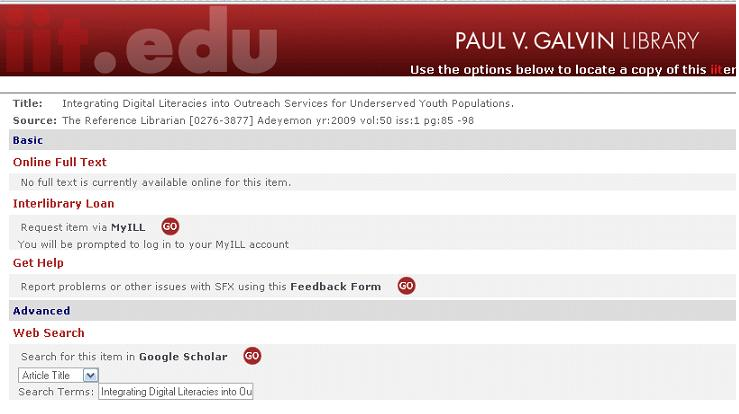

Content Areas:
This lesson will help you learn to acquire research resources through a review of the following areas:
Getting Started
- Learn how to access IIT library services
- Learn basic functionality on the IIT library website
Reasecrh Timelines
- Learn how to formulate a timeline
- Learn how to use your timeline to determine the best way to obtain resources
Requesting Resources
- Learn how to request articles from other libraries
- Learn how to request books from other libraries
Local Libraries
- Learn how to acces local libraries
- Learn when to utilize local libraries over interlibrary loan
Finding Rsources on the web
- Review web-based research tools and their uses
After you read the above sections, you will be directed to a short quiz which will help you reflect on the strategies presented in this lesson.
Getting Started
Accessing Library Services
If you are a newly admitted student and you have not obtained an IIT Hawk Card, details for doing so can be found at the Hawk Card Homepage. You will need your Hawk Card number to access some library services
Even if you don't have a Hawk Card, you can still access online journals and perform all of the search functions through the library website. You will only need your Hawk Card to check out materials in person at the Galvin Library or request materials through interlibrary loan. Let's take a look at how to get started.
Using myIIT to Access the Library Website
Although you can search for research materials through the library website directly, the best way to access the library website is to first log on to myIIT. Once you are logged in, you will see a link to "Library Resources." Try logging in, and clicking on that link.

Accessing the library website through myIIT allows a proxy server connection which will enable you to access most resources without reentering your login information.
Once you are at the library website, you will see a variety of seac:\Users\anjel\Downloads\Website_Project_File\images\research4_image2.jpgrch options available on the left-hand navigation bar.
The best place to begin researching is in a scholarly database that allows you to search multiple scholarly journals at once, such as Academic Search Premiere (EBSCO).